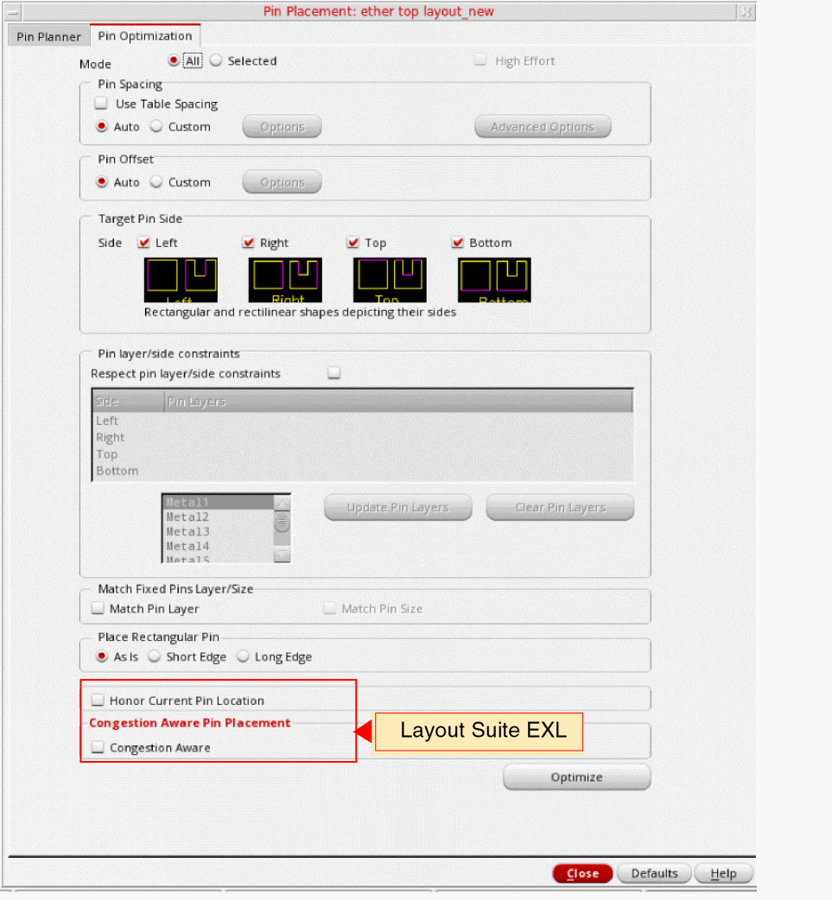
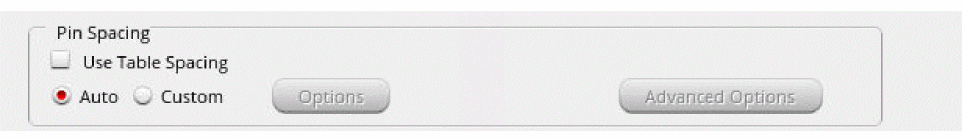
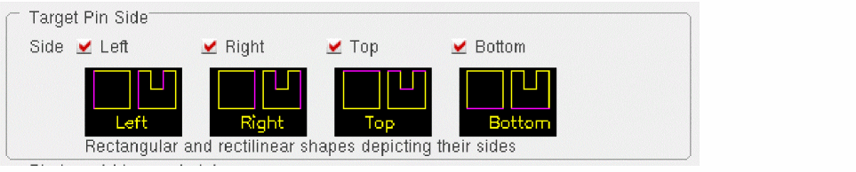
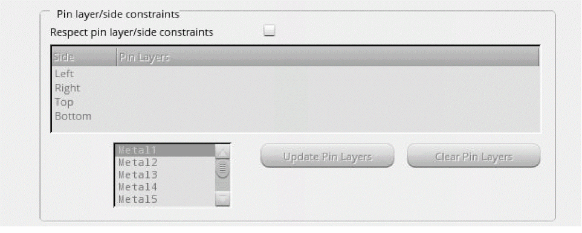

Optimizing Pins
To optimize pins in a layout design:
-
Choose Floorplan – Pin Optimization to display the Pin Optimization tab of the Pin Placement form. In Layout EXL and higher tiers, choose Plan – Pin Planning – Pin Optimization.
 - Set Mode to All or Selected depending on whether all or some of the pins are selected in the layout. You can change your initial selection by selecting the required Mode option in the form. In the Selected mode, the High Effort option is available. With this option selected, Pin Optimizer runs extra iterations to get better results (better than normal run).
-
In the Pin Spacing section, you can set options to specify pin spacing values either from the technology file or by entering the values manually.
See Specifying Pin Spacing for Pin Optimization. -
In the Pin Offset section, you can set options to define pin offset values for all layers in the current design.
See Specifying Pin Offset for Pin Optimization.
-
Select a Target Pin Side to specify the side of the block or the top-level PR boundary on which pins should be placed. In the image below, each check box shows the definition of that side for rectangular and rectilinear blocks.
 -
In the Pin layer/side constraints section, you can switch the pin layer depending on the side of the block on which the pin is placed by Pin Optimizer.
See Setting Pin Layer and Side Constraints for Pin Optimization. -
In the Match Fixed Pins Layer/Size section, select the Match Pin Layer check box to change the layer or purpose of the 'to be placed' or movable pins to match the layer of purpose of the connected fixed pins.
Select Match Pin Size to change the size of the movable pins to that of the connected fixed pins. - In the Place Rectangular Pin section, you can use the options to select the pin edge that needs to be abutted to the PR boundary for rectangular pins. The valid values are: As Is, Short Edge, and Long Edge.
- Select Honor Current Pin Location on the Pin Optimization tab to snap pins (selected or all) to their nearest WSP tracks by moving them by a minimum distance from their current position.
- Select Congestion Aware in the Congestion Aware Pin Placement section of Pin Optimizer to consider the channel congestion while optimizing pins.
- Click Optimize.
Related Topics
Specifying Pin Spacing for Pin Optimization
Specifying Pin Offset for Pin Optimization
Setting Pin Layer and Side Constraints for Pin Optimization
Congestion-Aware Pin Placement in Pin Optimizer
Return to top